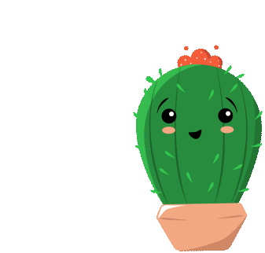

The Proud Rose
Once upon a time, in a desert far away, there was a rose who was so proud of her beautiful looks. Her only complaint was growing next to an ugly cactus.
Every day, the beautiful rose would insult and mock the cactus on his looks, all while the cactus remained quiet. All the other plants nearby tried to make the rose see sense, but she was too swayed by her own looks.
One scorching summer, the desert became dry, and there was no water left for the plants. The rose quickly began to wilt. Her beautiful petals dried up, losing their lush color.
Looking to the cactus, she saw a sparrow dip his beak into the cactus to drink some water. Though ashamed, the rose asked the cactus if she could have some water. The kind cactus readily agreed, helping them both through the tough summer, as friends.
Moral of the story: Never judge anyone by the way they look.
The End.